Overview
Atomistic simulations are powerful tools for understanding mechanisms at the molecular scale, but they are fundamentally limited by the timescales accessible to brute-force integration. Most of the simulated time is spent inside metastable basins, while the rare transitions between basins (e.g., protein conformational changes, defect rearrangements, nucleation events) are precisely what governs long-term evolution.
My research develops an importance-sampling framework that accelerates Langevin dynamics simulations of these rare transitions, while still recovering the unbiased transition rates and the correct relative probabilities of competing reaction channels. The biasing is driven by a neural network-parameterized importance function (a learned approximation of the committor), and statistical reliability is maintained by a branching random walk (BRW) algorithm that controls the variance of path weights.
The Rare Event Problem
Consider a system with position $\mathbf{x} \in \Omega$ evolving under overdamped Langevin dynamics at temperature $T$:
The energy landscape $U(\mathbf{x})$ partitions $\Omega$ into deep basins corresponding to metastable states $\Omega_{\rm A}$ and $\Omega_{\rm B}$, separated by saddle points. Because the equilibrium distribution $\rho_{\rm eq}(\mathbf{x}) \propto e^{-\beta U(\mathbf{x})}$ is concentrated near the minima, a trajectory initialized in $\Omega_{\rm A}$ tends to remain there for very long times before making the rare jump into $\Omega_{\rm B}$.
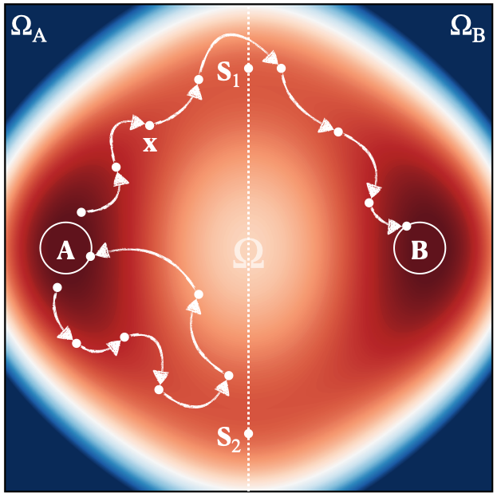
Defining small regions A and B around the energy minima lets us decompose any long trajectory into short paths—either failure paths (leave A, return to A before reaching B) or success paths (leave A, reach B before returning). The transition rate is then
where $J_{\rm A} = \langle t_{\rm AA}\rangle^{-1}$ is the flux out of region A (the Hill relation) and $P_{\rm AB}$ is the success probability—the rare quantity we want to estimate. For genuine rare events $P_{\rm AB} \ll 1$, so brute-force sampling is hopeless.
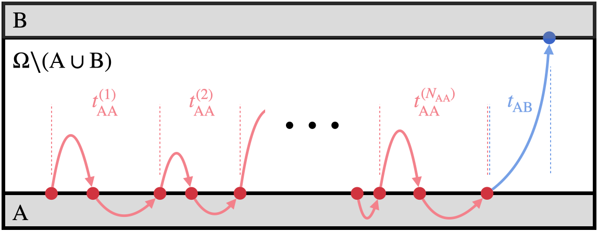
Approach
The framework modifies the dynamics through an importance function $I(\mathbf{x})$ that biases the transition kernel toward successful trajectories. The optimal choice is the committor function—the probability that a path starting at $\mathbf{x}$ reaches B before A—but the committor is the solution of a high-dimensional PDE on a complex landscape and is generally intractable. Two ideas make the framework practical:
- Neural-network parameterization of the importance function. $I(\mathbf{x};\theta)$ is represented by a neural network and trained adaptively. For atomistic systems the network respects physical symmetries (translation, rotation, atom-permutation) via a SchNet-style graph neural network.
- Unbiased rate estimator that tolerates approximation error. Even when $I(\mathbf{x};\theta)$ is not exactly optimal, weighting each sampled path $\Gamma$ by $W(\Gamma)$ derived from the stopped transition operator yields an unbiased estimator of $P_{\rm AB}$ and of the rate $r_{\rm AB}$. Crucially, the relative probabilities of competing reaction channels are also preserved.
- Branching random walk (BRW) for variance control. Naive importance sampling produces path weights with extreme variance—a few paths dominate the estimator. The BRW algorithm splits over-weighted paths and prunes under-weighted ones, keeping the weight distribution within a controlled range and dramatically reducing the variance of $\hat{r}_{\rm AB}$.
- Reverse path sampling and bidirectional rates. The same neural-network importance function is used to sample both A→B and B→A transitions, enabling consistent estimation of forward and reverse rates without a separate biasing strategy for each direction.
Results
2D Potential with Two Reaction Channels
The first benchmark is a two-dimensional potential with two saddle points and asymmetric barriers (1.02 eV and 0.98 eV). The neural network learns the importance function from short biased trajectories, and the framework recovers both the total transition rate and the relative weight of each channel in close agreement with the analytical and brute-force references. This is a clean setting to verify that errors in the learned importance function are absorbed by the path-weight reweighting.
14-Dimensional Rugged Potential
Scaling up, the framework is applied to a 14-dimensional rugged potential constructed by embedding the two-channel system into a high-dimensional space with additional rough directions. Importance sampling continues to recover accurate transition rates and channel fractions, demonstrating that the neural-network parameterization scales beyond the regime where exact committor PDE solvers are feasible.
The LJ7 Atomistic System
The most demanding benchmark is the system of seven Lennard-Jones discs (LJ7)—a 14-degree-of- freedom atomistic model whose local energy minima fall into four collections $C_0,C_1,C_2,C_3$ (after quotienting out continuous symmetries). A soft-core form of the LJ potential is used to regularize the $r_{ij}\to 0$ singularity:
Metastable states are labeled by the second and third central moments $(\mu_2, \mu_3)$ of the atomic coordination numbers. The transition of interest goes from the ground state $C_3$ (region A) to the higher-energy $C_2$ family (region B), which itself decomposes into four distinct transition modes $M_1$–$M_4$ with slightly different barriers (0.49 eV vs. 0.52 eV).
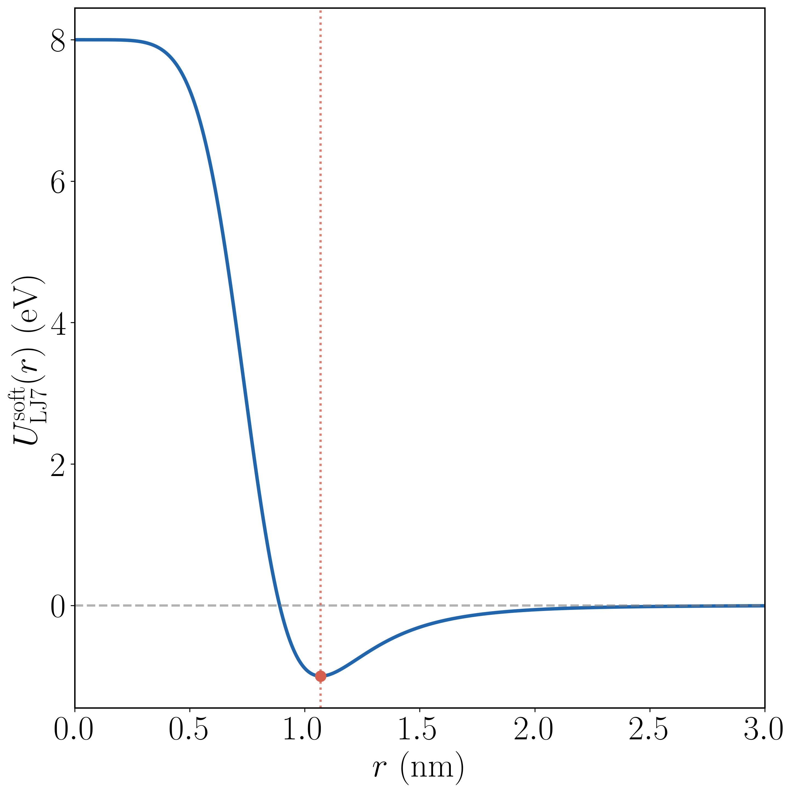
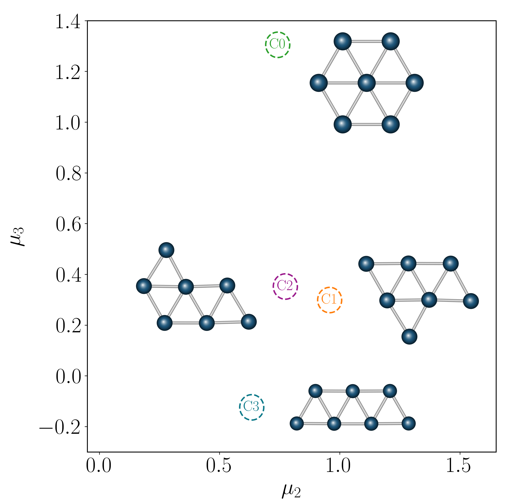
At $T=600$ K the importance-sampled rate is $r_{\rm AB} = (4.32 \pm 0.01)\times 10^{-4}$ fs$^{-1}$, in excellent agreement with the brute-force rate $4.41\times 10^{-4}$ fs$^{-1}$. Without the path-weight reweighting—using $I(\mathbf{x};\theta)$ as if it were the exact optimal importance function—the rate is underestimated by roughly 40%, and the relative weights of the four transition modes collapse to a near-uniform distribution rather than the correct asymmetric pattern. Reweighting is what allows the framework to distinguish the lower-barrier modes $M_1, M_2$ (~32% each) from the higher-barrier modes $M_3, M_4$ (~18% each).
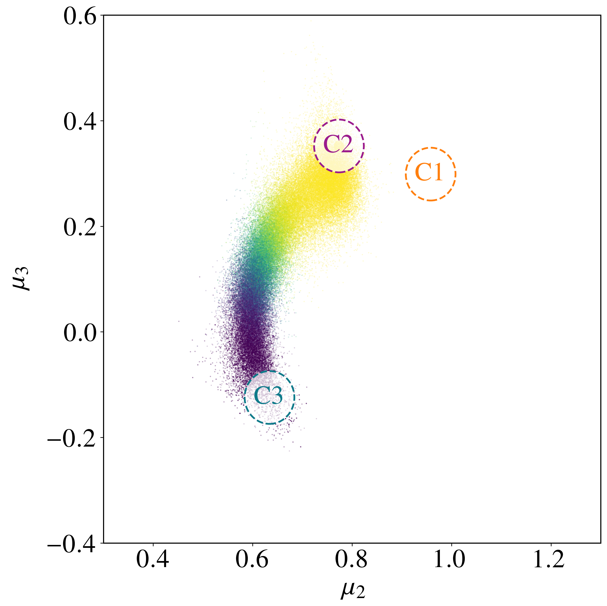
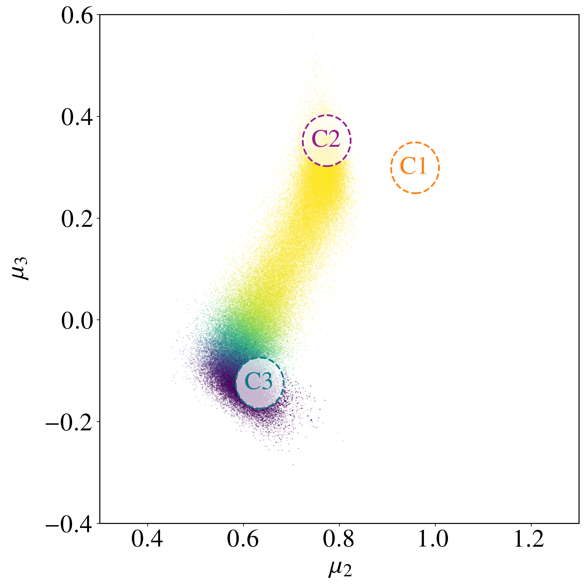
Transfer Learning Across Temperatures
The optimal importance function is temperature-dependent, so naively the network would have to be retrained at every temperature of interest. Instead, the network trained at $T=600$ K is used as a warm start for $T=500, 400, 300$ K via transfer learning. This recovers Kramers-theory-consistent rates spanning four orders of magnitude—down to $r_{\rm AB} \approx 3\times 10^{-8}$ fs$^{-1}$ at 300 K—at temperatures where brute-force Langevin dynamics cannot accumulate any transitions in feasible wall-clock time. The agreement with Kramers theory in fact improves at lower temperatures, where the harmonic approximation underlying Kramers becomes more accurate.
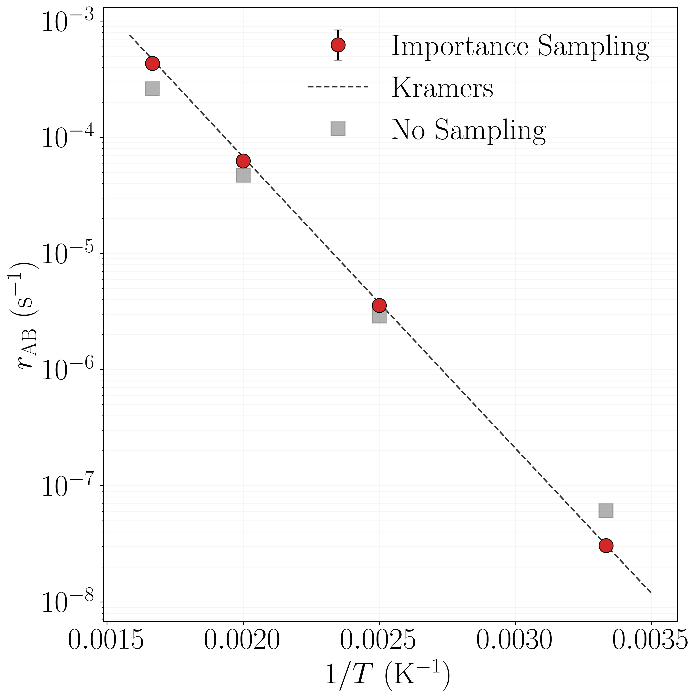
Channel Probabilities Across Temperatures
Beyond the total rate, the framework also recovers the right fraction of transitions going through each of the four modes $M_1$–$M_4$ at every temperature. As $T$ decreases, the lower-barrier modes $M_1, M_2$ (0.49 eV) gain weight and the higher-barrier modes $M_3, M_4$ (0.52 eV) lose it, exactly as Kramers theory predicts. The no-reweighting estimator misses this entirely: it gives a nearly uniform, temperature-independent split across the four modes that reflects the bias of the imperfect importance function rather than the underlying physics. Path-weight reweighting is what turns biased samples into a faithful estimator of the channel split.
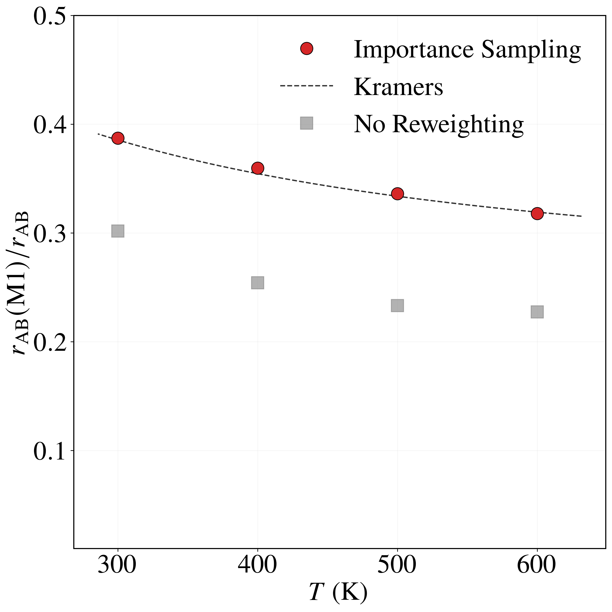
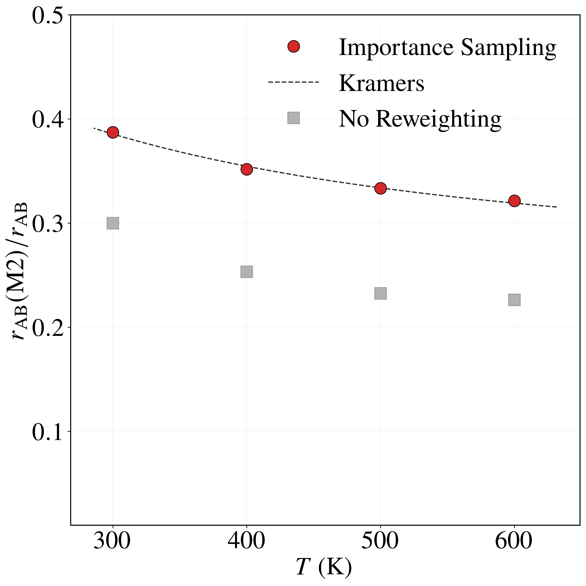
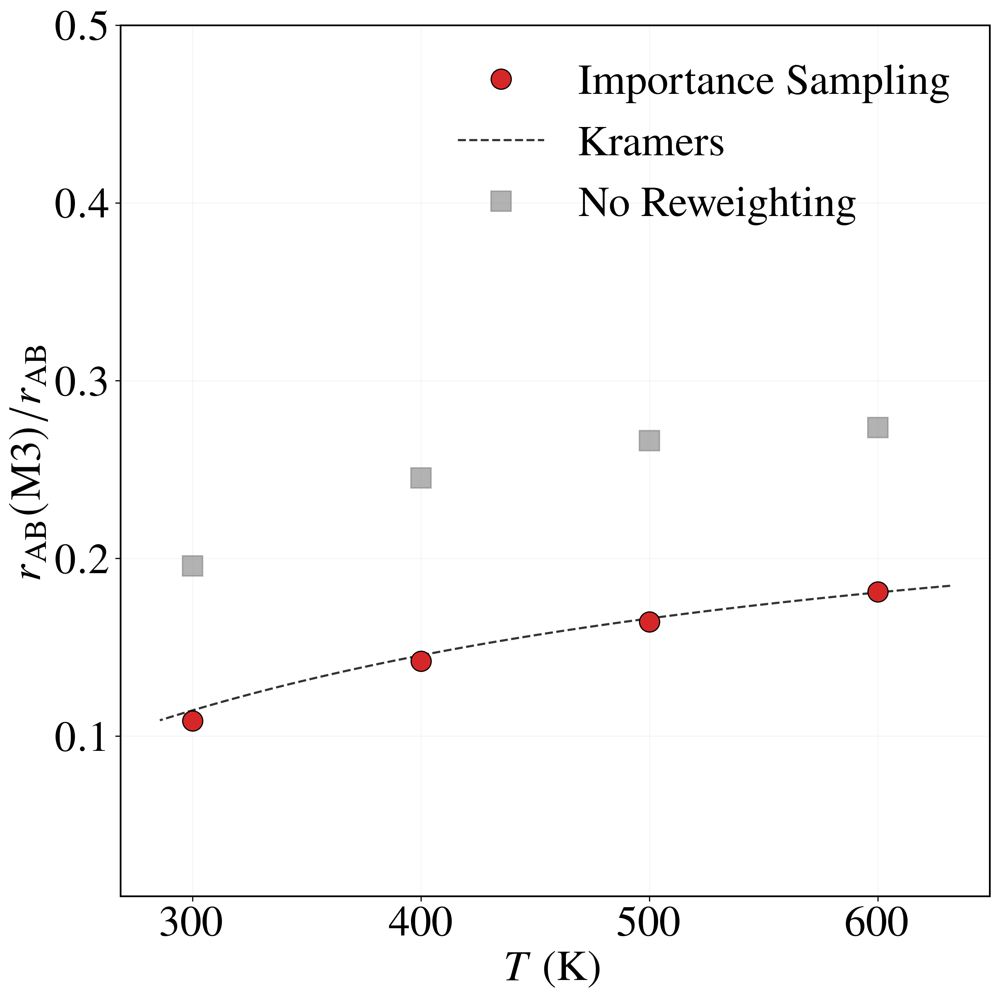
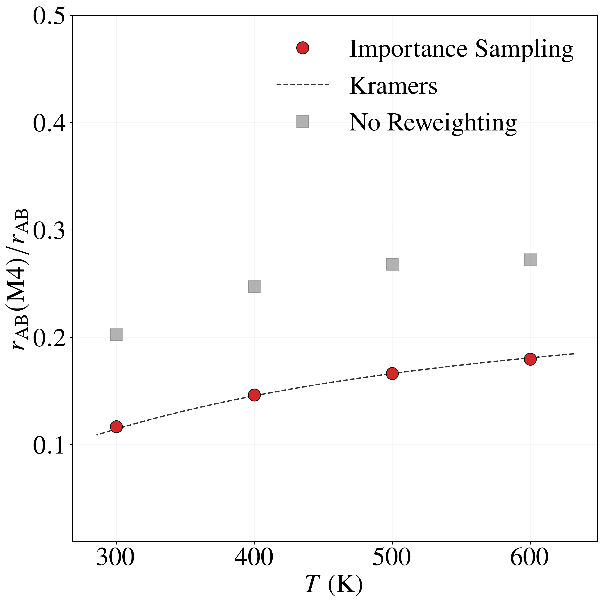
Future Directions
Ongoing and future work extends the framework toward larger atomistic systems and richer physical settings: protein conformational changes, crystal defect evolution and dislocation plasticity, and underdamped Langevin dynamics where inertia plays a role. There are also promising connections to maximum-diffusion reinforcement learning, score-based diffusion models, and quantum-walk acceleration of Fokker-Planck propagators that I am exploring as part of broader efforts to learn good importance functions automatically.
Reference
M. M. Kim and W. Cai, Accelerated Langevin Dynamics Simulation via Neural Network-Driven Importance Sampling, 2026.